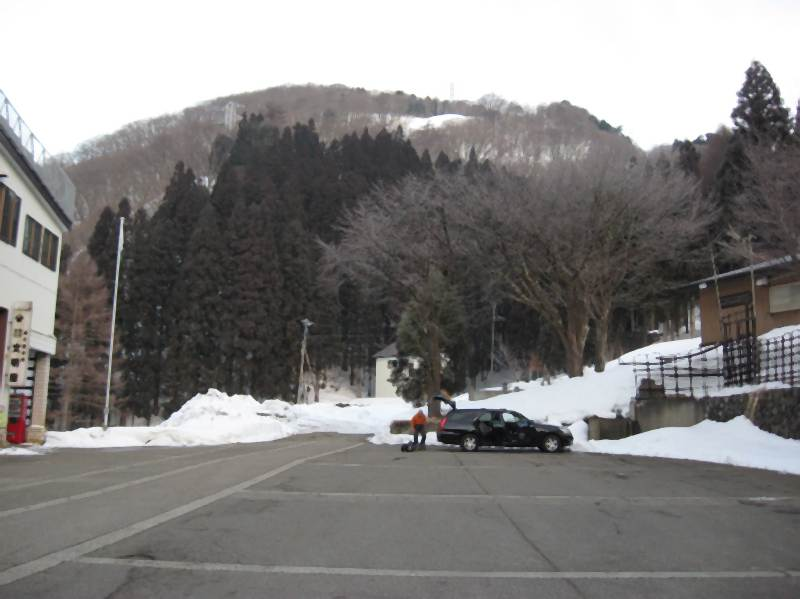
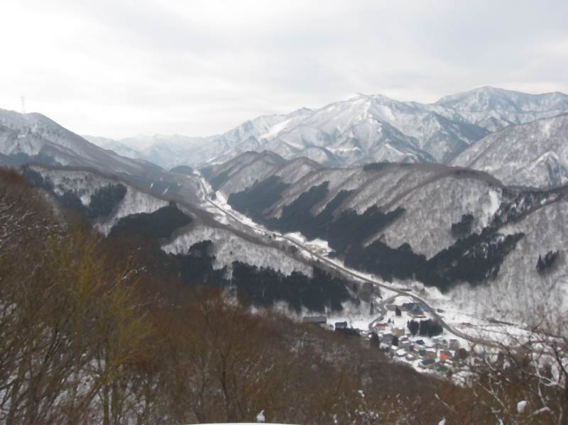

|
|||||||||||||||||||||||||||
|
|||||||||||||||||||||||||||
|
日白山偵察行 |
| 実 施 日 | ２００９年２月５日 | |||
| リーダー | 木村員士 | |||
| 報 告 者 | 小林義亮 | |||
| 参加者数 | ２名 （会員２名） | |||
| ２月１４〜１５日の雁が峰、日白山クラブ山行のための偵察行。あまり名を聞かない山だが、国道１７号線をはさんでかぐら田代スキー場の丁度反対側にあり、平標山が北に高度を落とした一ピークである。山頂からは谷川連峰の大迫力の展望が開ける。日白山の標高は１６３１メートル、二居からの標高差は約８００メートルだが、雪が少ないこともあって結構きつい山行となった。 |
|  |
| 木村は朝３時に自宅を出、小林を３：２５にピックアップして二居部落へ。７：１５に到着し７：３０から登山開始。取りつきは二居スキー場からと旧三国街道を二居峠へと進む二つがあるが、前者はスキー場の雪が所々切れているのと稜線がセッピとなっていて乗り越しに苦労するので、時間は要するが峠道を進む。写真は林道入口の駐車場からみた二居峠。林道は関東と越後の重要街道で登りやすい。越後の国主もここを越したのだろうと思うと風情を感じる。 |
 |
A |  |
| 二居峠。小さな東屋がポツンと建っている。 |
峠から東へと稜線を上るが、右はセッピ、左はブッシュと歩きづらいこと甚だしい。 |
|  | A | |
| 二居部落と南へ延びる国道１７号線。右は苗場スキー場 |
延々と続くセッピ。かさね餅のように張り出していて板を外さざるを得ない場面も。樹林帯はブッシュが深く、本番では人数が多くこのルートは無理かと判断。 |
| A | ||
| 高度を上げて行くと樹林帯に。後には苗場山がきれいに見える。 | やっと快適な斜面へ。日白山手前のピーク東谷山（１５５３メートル）が近い。 |
| A | ||
| 東谷山から目指す日白山が見えた。一度下ってまた上っていく。ここからまだ１時間かかる。 | 東谷山を下る。横は張り出したセッピ |
| A |  |
|
| 日白山からは南へ。平標をめがけて下る。山頂直下は急斜面のやせ尾根。アイスバーンの時はてこずるだろう。 |
平標との鞍部から二居部落めがけて下る。雪質は北斜面はパウダー、南斜面は湿雪、注意しないと足を取られる。深い谷がありコース取りに細心の注意が必要。堰堤を越えて右岸に渡ると後は林道を一気に二居部落に向け滑走。本番では谷筋の上り、下りが良かろうと二人の意見が一致。 |
|
||||||||||||||